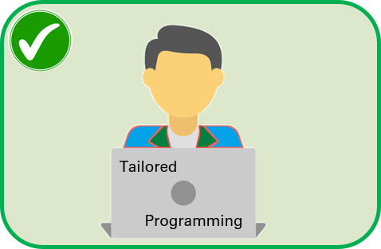

Cloud Computing Skills
I can help you harness the power of cloud computing to optimize your business processes. I can make your business thrill in the digital era by moving your information systems to a secure, powerful, and scalable cloud platform.
Tailored Programming
As a detailed software developer, I can create software solutions that match your needs. From astonishing frontend dashboards to efficient backend micro-services, my solutions are tailored to help you succeed in today's competitive market.
